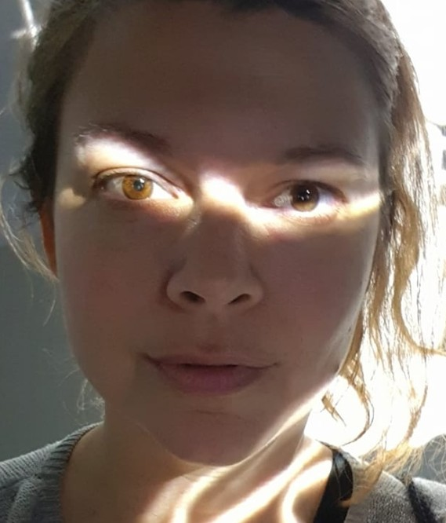

|
Född
28 okt 1981
i Huddinge (AB)
1
.
|
 |
|
Gunilla Linnea Jägeberg
Född 28 okt 1981 i Huddinge (AB) 1 . |
F
Ulf Bertil Jägeberg.
Född 6 jun 1948 i Brännkyrka (AB) 2 . |
FF
Bertil Emil Jansson Jägeberg.
Född 2 maj 1917 i Karlshov, Enebymo, Norrköping, Norrköpings Östra Eneby (E) 3 . Död 22 mar 1982 i Mölndalsbacken 66, Gård 8, Kv Läskpapperet, Stureby, Enskede, Stockholm, Vantör (AB) 4 . |
FFF Karl Emil Jansson. Född 3 dec 1870 i Hummelkärr/Karlsro, Västra Ed (H) 5 . Död 16 jan 1953 på Almvägen 13, Gård 4, Kv Stättan, Enebymo, Norrköping, Norrköpings Östra Eneby (E) 4 . |
|
FFM Anna Augusta Laurentia Jansson f Larsson. Född 17 nov 1882 i Gunviken, Västra Vingåker (D) 6 . Död 30 jan 1959 i Lenningska sjukhemmet, Strömbacken, Norrköping, Norrköpings Sankt Olai (E) 4 . |
|||
|
FM
Lillian Ingeborg Jägeberg f Näsholm.
Född 28 okt 1922 i Sollefteå (Y) 7 . Död 11 jun 2009 på Sandfjärdsgatan 33, Gård 3, Kv Björklången, Årsta, Stockholm, Enskede-Årsta (AB) 4 . |
|||
|
M
Solveig Marianne Jägeberg f Persson.
Född 27 mar 1947 i Ovansjö (X) 8 . |
|||
Framställd 12 aug 2026 med hjälp av Disgen version 2025.